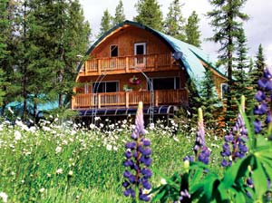
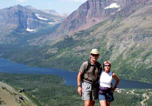
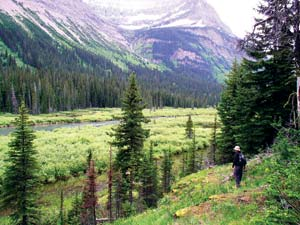
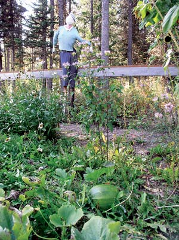
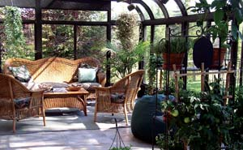
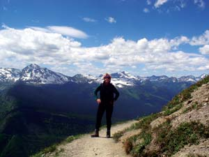
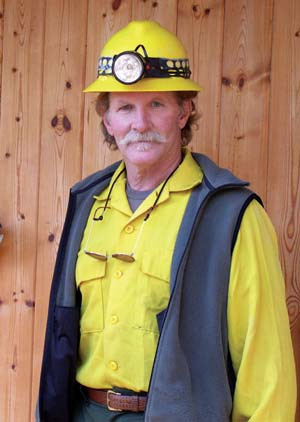
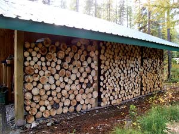
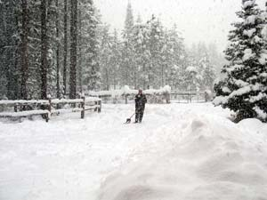
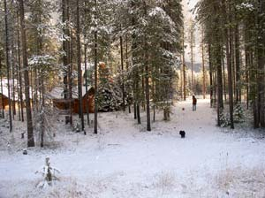

We fell in love with the wild beauty and chilly climate of Montana, then opened a B&B near Glacier National Park.
My husband, Hunter, and I live outside Columbia Falls, Mont., at the edge of Glacier National Park. We arrived here three years ago with a simple goal: to live a quiet, self-reliant life in this beautiful natural environment.
Most people I know think we’re crazy for moving to this cold climate. I grew up in south Florida, and Hunter lived on St. Croix in the U.S. Virgin Islands for 20 years. But, quite frankly, I’d had enough after spending the first half of my life in a hot, humid environment and weathering 15 hurricanes - several while I lived aboard a sailboat. Hunter feels the same way I do about heat and hurricanes. We met on St. Croix shortly after it was devastated by Hurricane Hugo in 1989.
Hunter has a background in the wine and restaurant industries, and I’ve had several careers: archaeologist, paralegal, editor, commodity futures trader, freelance writer and photographer. We came to Montana in the summer of 2003, when I applied for an archivist position in Glacier. The person who held the position decided at the last moment to keep it, but we did not learn this until after we arrived in Montana. Both Hunter and I really wanted to stay for the summer, so we started looking for seasonal work. We were hired to work in one of the park’s gift shops and spent all our free time exploring the park and falling in love with its million acres of pristine Rocky Mountain wilderness. When summer was over, we spent the rest of the year traveling, but Glacier kept calling to us. We returned the next summer to work in the gift shop and decided to stay.
That winter we found the perfect house. We discovered it on a cold day, when the house was deserted and the snow was so deep we had to slowly break a path to the front door. We both had the same thought - this would make a perfect bed-and-breakfast. Neither of us had ever contemplated owning a B&B, but it just seemed natural. Moss Mountain Inn was born.
The inn is a four-bedroom cedar home that overlooks the peaks of Glacier and sits on 11 acres in the Flathead National Forest, by the wild and scenic North Fork of the Flathead River. Our slice of mountain heaven is a mix of forest and meadow with a series of natural ponds. The property is small by Montana standards, but it’s more land than I had ever dreamed of owning.
We immediately started working on the house. B&B guests don’t like sharing a bathroom, so we turned one of the four bedrooms into a bathroom, leaving us with two guest suites. We also did a few cosmetic renovations, including redoing the countertops, and painting many of the rooms to add some color to the mostly off-white interior. We were open for business by June.
Many people visit Glacier each summer, and our busiest season is from mid-May through mid-September, though we stay open year-round. This past year, we had guests sporadically throughout the winter. Big Mountain, a popular ski area, is only 20 miles away, but most people consider that a bit too far to travel. However, Glacier offers many winter attractions, including cross-country ski trails and ice climbing, so there’s a lot of potential for attracting vacationers year-round.
Confirmed “greenies,” Hunter and I eat organic food, recycle everything we can and try to live a thoughtful, balanced life in tune with our natural surroundings. When we started the B&B, we knew it would be a challenge to live sustainably while at the same time offering our vacationing guests a bit of luxury. We would have to take baby steps, doing as many small things as we could to maintain the delicate balance between nature and the effects of people who come to experience it.
Running an inn requires a lot of housecleaning and laundry, but I use only biodegradable, eco-friendly soaps. Also, to minimize the impact of our solid waste, we installed a state-of-the-art septic system twice the size specified for us and our guests. To cover the resulting excavation, we planted red clover, a hardy, nitrogen-fixing ground cover that’s highly prized by grazing deer and elk.
We draw all our water from a shallow, natural underground spring and test the water twice a year to ensure that we aren’t polluting it. The pond on our property is an overflow of the spring. It’s a few hundred feet across and a frequent stopover for migratory waterfowl and other wildlife. We looked into stocking it with trout but were told the eagles and hawks would catch them all before we could.
Our business license required an on-site inspection by the local health department. Although our inn passed every other category with flying colors, we flunked the part on chemical cleaning and disinfecting products. The law requires us to use these products to protect our guests from germs, even though many contain toxic chemicals. It’s a puzzling requirement, to say the least. But during our discussions with the health department, we made a strong case that these substances harm our water, the valley’s migratory animals and their forest and river habitats. Ultimately, we agreed to keep bleach on hand “in case of emergencies,” and our license was granted.
Attached to our wilderness inn is a 350-square-foot glass solarium we call the Going-to-the-Sun Room, after the famous scenic road that runs through Glacier. In the winter, the sunroom collects radiant heat to warm the house; acts as a greenhouse for seedlings, tomatoes, herbs and peace lilies; and allows our guests to sit “outside” year-round in the company of green plants. The plants help purify the indoor air, an important consideration in a climate where it’s often too cold to even consider opening the windows.
In the midst of getting the B&B up and running, Hunter joined the local volunteer fire department and learned how to selectively harvest our larch, pine and birch trees for wildfire protection. Selectively cutting our six acres of forest provides strenuous outdoor exercise and produces enough firewood to heat the entire inn throughout the long Montana winters. Right now, we are on the electric grid, but we’d rather power the house with renewable energy. Being off the grid is definitely in our future, as is a log cabin.
We serve a lot of organic food, which can get expensive. To cut down on our food bill, I work a few afternoons each week at a local organic health food market. This allows us to buy our food and supplies wholesale, and to support local organic growers and producers. All our eggs come from a neighboring farm and are delivered fresh to our door once a week.
Hunter works a few evenings each week as a bartender at a restaurant in nearby Whitefish, and he also does some catering on the side. The original plan was to “quit working” and just run the inn, but we both really enjoy our part-time jobs and will probably stick with them.
Our house’s previous owner was an enthusiastic gardener. The yard was under snow when we bought it, so we had no idea what would pop up in the spring. Holy moly! There were so many garden beds that we had to abandon a few of them. We still have a 50-by-50 foot garden with perennials, herbs and vegetables that keeps us busy throughout the growing season.
The property is very rocky. To enrich the garden’s soil, we trucked in topsoil from a fertile growing area in Flathead Valley. Having never met the house’s previous owners, I don’t know if they used organic methods or not, but they left us a fully developed compost pile and a lovely pile of aged manure that we have continued to use.
The growing season is extremely short and challenging. We can’t plant seedlings outdoors until June, and the growing season lasts only three months before the first frost. Days are hot and dry, and nights are in the mid-50s all summer. I am still learning what grows well here and have had a few failures. Last year, deer ate all my broccoli, and hop vines more or less took over the entire garden before I knew what happened. But we have had some great successes. We have harvested tomatoes, onions, strawberries, kale, beans, radishes, cabbage and salad greens. This year, I also planted asparagus and several berry and grape varieties.
In our meadow, we are experimenting with three different wildflower combinations, and we encourage pollinating bees by planting bee balm and sunflowers. We cut some flowers to brighten our guests’ rooms and hang others on fences for the birds to enjoy through the fall and winter. Bees dominate our lavender beds. They seem busily content, never bothering me as I move among them to harvest the aromatic lavender, always leaving plenty for them. Their quiet, purposeful humming inspires all my gardening activity.
If there is one character trait that defines me, it’s my lifelong desire to embrace change and challenge. We could not have found a better place to test this peculiar proclivity. On the western edge of the Continental Divide, the weather changes constantly. We get cold air from Canada, wet weather from the Pacific Northwest, and dry air from the south. I thrive on the dynamic energy of the constant climatic diversity and flux. I also love the long winters, simply because they are different and challenging, and our woodstove keeps the house toasty even in the coldest weather.
Our inn has been a successful, thoroughly enjoyable experiment in taking the road less traveled and remaining open to possibility. Our goal is to provide our guests and friends with a memorable experience, and when possible, to introduce them to the benefits of a balanced, rewarding lifestyle. We consider it a privilege to live so close to Glacier National Park - I can’t imagine a more perfect place to live.
Contact Debra and Hunter Moss at mossmtn@montanasky.net or visit their Web site at mossmountaininn.com.
|
 DEBRA MOSS Debra and Hunter Moss own and operate Moss Mountain Inn, a two-suite bed-and-breakfast near Glacier National Park. |
 DEBRA MOSS Debra and Hunter Moss moved to Montana in the summer of 2003. |
 DEBRA MOSS Debra and Hunter Moss hike frequently in Glacier National Park, which is near their home. |
|
 DEBRA MOSS "Sheryl Crow" scares birds away from the garden. |
 DEBRA MOSS The sunroom at Moss Mountain Inn makes a spacious greenhouse, and it collects heat that helps warm the house during the winter. |
 DEBRA MOSS Debra hikes in Glacier National Park. |
|
 DEBRA MOSS Hunter volunteers with the local fire department. |
 DEBRA MOSS Debra and Hunter Moss collect enough firewood to heat Moss Mountain Inn throughout the long Montana winter. |
 DEBRA MOSS Winter in Montana. |
|
 DEBRA MOSS Six acres of larch, pine and birch trees surround Moss Mountain Inn. |
|
|